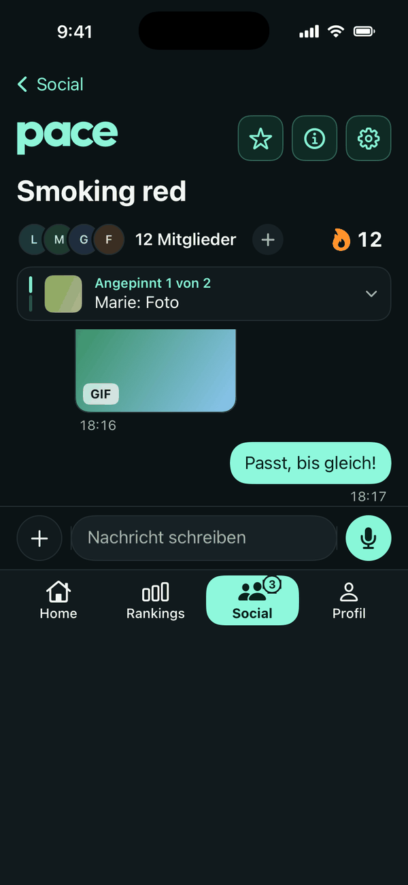
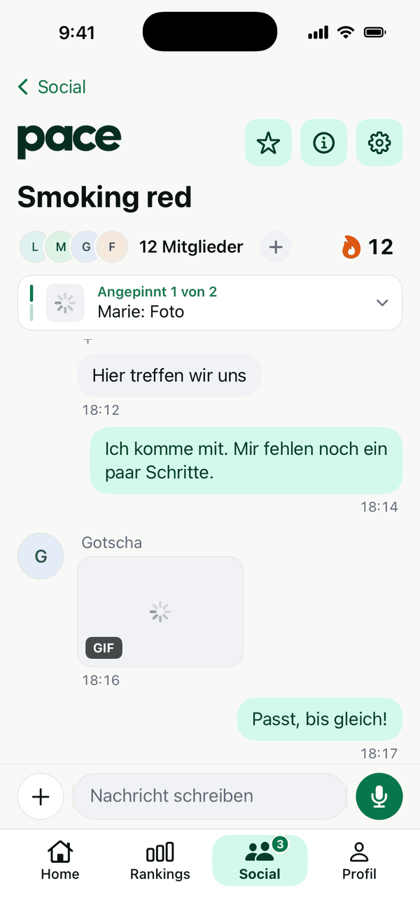

Dein Alltag in Bewegung.
Automatische Schritte aus Apple Health — ohne manuelle Schritteingabe in Pace. Schritte, Kalorien und Aktivität immer im Blick.
Apple Health AutomatischTagesziele Dein Tempo
Deine Schritte. Deine Ziele. Deine Leute.
Mach Bewegung zu einem Teil deines Alltags.


Automatisch erfasste Bewegung, persönliche Ziele und Menschen, die mitziehen.
Automatische Schritte aus Apple Health — ohne manuelle Schritteingabe in Pace. Schritte, Kalorien und Aktivität immer im Blick.
Rankings für Ort, Landkreis, Bundesland und Deutschland. Dazu private Ranglisten für Freunde, Schule, Arbeit und eigene Gruppen.
Profile, Freunde, Einzel- und Gruppenchats. An Gruppen-Events nimmst du kostenlos teil.


Verabrede dich direkt in Pace. Einzel- und Gruppenchats halten deine Leute zusammen — vom nächsten Spaziergang bis zur gemeinsamen Serie.
Eine Pro-Stufe, alle Pro-Funktionen. Die folgenden Erweiterungen sind geplant und noch nicht veröffentlicht.
Eigene Haupt- und Sekundärfarbe mit direkter Designvorschau. Dazu eigene Chatfarben und Hintergründe für Einzel- und Gruppenchats.
20–30 auswählbare Appicons, auch saisonale Designs. Pro-Badge, Profilbildrahmen und ein eigener öffentlich sichtbarer Profilbanner.
Individuelle Namensfarben in Chats und Rankings. Dein persönlicher Stil begleitet dich durch die App.
Rankings anderer Orte und Regionen entdecken und vergleichen — ohne gekaufte Vorteile in Rankings.
Eigene Gruppen-Events starten: etwa eine 30-Minuten-Schrittchallenge oder ein Rennen bis 1.000 Schritte. Die Teilnahme bleibt kostenlos.
Zusätzliche Analysen zu Regelmäßigkeit, Aktivitätsmustern und persönlicher Entwicklung — mit passenden neuen Pro-Widgets.
Für alle, die Pace Pro erst einmal kennenlernen möchten.
Für ein ganzes Jahr voller kleiner Fortschritte.
Zum Einstieg geplant: 29,99 €.
Mit PACE1 erhalten die ersten Nutzer ein Jahr Pro kostenlos. Aktionsbedingungen folgen; die Aktion ist noch nicht aktiv.
PACE1Bewegung zählt. Dein Abo nicht.
Alle bestehenden kostenlosen Funktionen und Widgets bleiben kostenlos. Keine gekauften Vorteile in Rankings.
Diese Erweiterungen sind noch nicht verfügbar.
Timer und Strecke, Kilometerbenachrichtigungen, Pause und Live Activity — geplant für deine nächste Laufrunde.
Menschen mit ähnlichen Zielen finden. Öffentliche Communities sind als spätere Erweiterung geplant.
Pace braucht bestimmte Bewegungsdaten, damit Schritte, Ziele und Rankings funktionieren. Welche Daten wofür genutzt werden, soll nachvollziehbar bleiben.
Du erlaubst den Lesezugriff auf Bewegungsdaten. Pace schreibt nichts in Apple Health.
Distanz, aktive Kalorien, Stockwerke und Trainingsminuten bleiben laut App-Konzept auf deinem Gerät.
Für Wettbewerbe wird die tägliche Summe der Competition Steps an das Backend übertragen — keine einzelnen Health-Messwerte.
Ruhepuls und durchschnittlicher Puls beim Gehen brauchen eine separate Anfrage und bleiben lokal.
Profil, ausgewählte Region und soziale Inhalte wie Chats werden für die jeweiligen Online-Funktionen verarbeitet.
Hier siehst du App-Screenshots. Die Website hat keinen Zugriff auf deine Apple-Health-Daten.
Schritte bilden die Grundlage für Tagesziele und Rankings. Distanz, aktive Kalorien, Stockwerke und Trainingsminuten ergänzen die persönliche Aktivitätsübersicht. Pulsdaten werden nur nach einer gesonderten Nutzeraktion angefragt. Fotos werden für Profilbilder oder geteilte Chat-Inhalte verwendet, wenn du diese Funktionen nutzt.
Gesundheitsdaten zählen zu besonders geschützten personenbezogenen Daten. Berechtigungen verwaltest du in Apple Health beziehungsweise den iOS-Einstellungen. Die vollständigen Angaben zu Verantwortlichem, Rechtsgrundlagen, Empfängern, Speicherung und deinen Rechten müssen vor dem Produktstart in der Datenschutzerklärung ergänzt werden.
Pace wird aktuell entwickelt. Einen Veröffentlichungstermin gibt es noch nicht.
Neue Ideen aus dem Boketta-Universum.